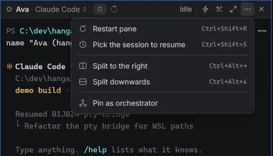
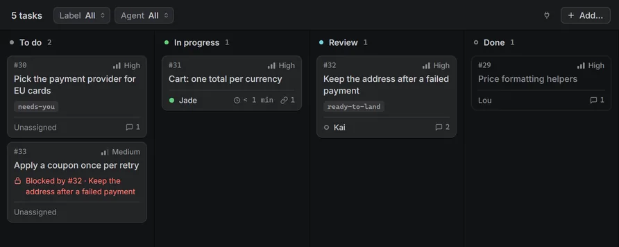
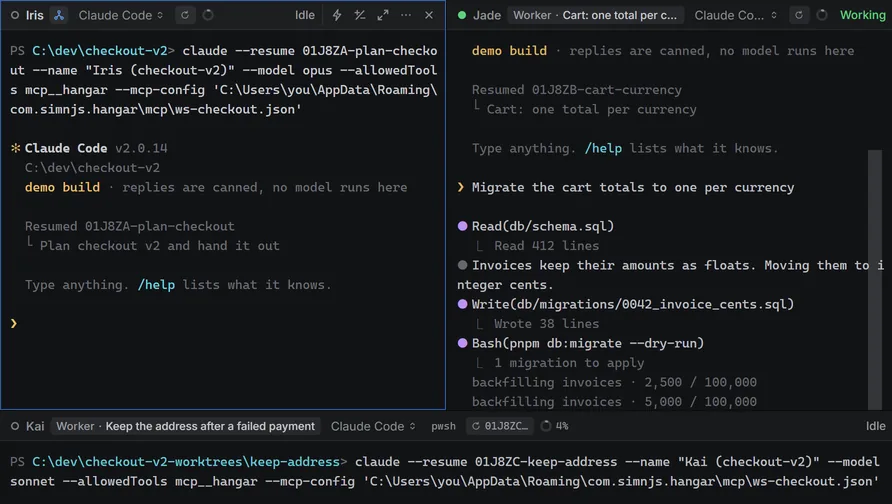
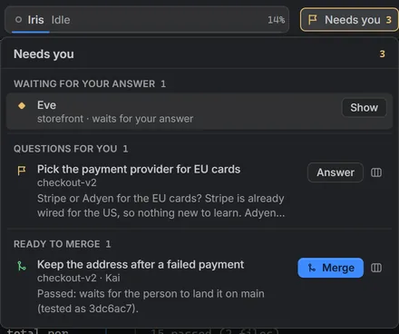
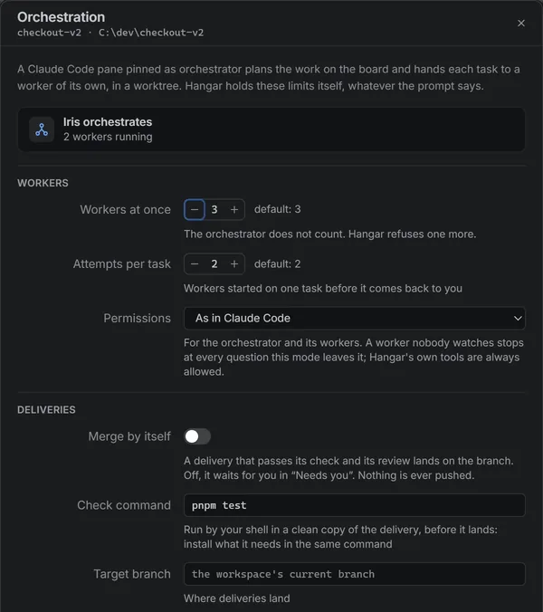
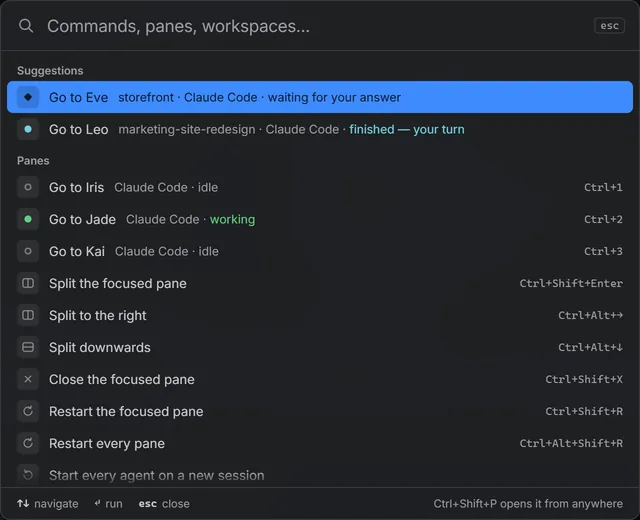
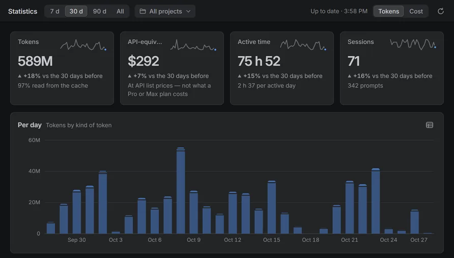
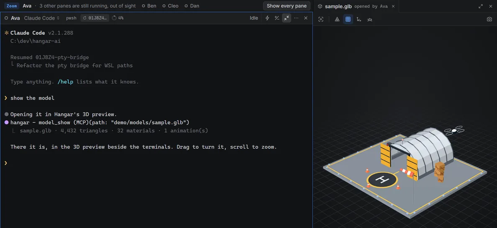

Hangar.AI runs Claude Code, Codex, Gemini CLI and OpenCode side by side in real
terminals, with a task board and a memory they share. Pin a Claude Code
pane as orchestrator: it plans the work and hands each task to a worker in its
own git worktree, and Hangar
merges each delivery once it passes a review, and your tests if you set them.
Free and open source under the MIT license. No account, no telemetry.
Navigator. Every workspace, and what its agents are doing right now.
Orchestrator. Iris plans on the board, starts the workers and hears when their work lands.
Workers. Jade and Kai, each on one task, each in a git worktree of its own.
Needs you. Questions and finished work waiting for your decision.
Inspector. The focused agent's session, context, cost and plan usage.
Works with Claude Code, Codex, Gemini CLI, OpenCode
and any shell, on Windows, macOS and Linux.
Pin an orchestrator. It runs the others.
Orchestration turns one Claude Code pane into a lead that plans and delegates
instead of writing code. Hangar does the parts a prompt should not be trusted with: the
worktrees, the limits, the checks and the merge.
1
Give it an objective
In a git repository, pin any Claude Code pane as the workspace's
orchestrator and say what you want. It reads the code, asks you
the product questions it cannot settle itself, all in one go, then writes a plan with validation criteria to the shared memory.

2
It plans on the board
The plan becomes tasks on the workspace board, each with a goal, acceptance criteria, the command that proves it, and the files it
owns. Hangar never runs two tasks at once whose files overlap, and a task waits for the ones
it depends on.

3
Workers take the tasks
Each task goes to a worker: a new Claude Code pane, on Sonnet by
default, on a branch of its own in its own git worktree, with 20
ports set aside so their dev servers do not fight over one. Three run at once by
default, and Hangar refuses a fourth.

4
Every delivery is checked before it lands
A worker that is done hands in its branch. Hangar merges it in a scratch
worktree, runs your check command if you set one (pnpm test, cargo
test…), and has a reviewer agent with a fresh context read the diff. Only then does it
move your branch forward. A step that fails goes back to the worker with the reason, and
one delivery runs at a time per repository.
Delivery of #32Keep the address after a failed payment
Merged onto main in a scratch worktreeYour own checkout is left alone until the fast-forward.
pnpm test passedThe check command you set, run by your shell.
Review approvedA reviewer agent with a fresh context read the diff, with read-only tools.
Landed: main fast-forwardedLocal only. Nothing is pushed.
An illustration of the stages, with a task from the demo.
You stay in charge
One box gathers what waits on you: an agent's question, a product decision
the orchestrator escalated, a delivery ready to merge. Deliveries merge by themselves by
default; turn that off and each one waits for your click.

Limits a prompt cannot talk its way past
Workers at once, attempts per task, overlapping files, permissions, the check
command and the branch work lands on are set per workspace and enforced by Hangar, not asked of
the model. The models are set there too: by default Opus plans, Sonnet
works and Sonnet reviews.

Hangar never pushes
Merges are local fast-forwards, and the orchestrator and its workers are told not to push. Pushing, pull requests and releases stay your call.
Woken by events, not a loop
The orchestrator ends its turn while workers run. Hangar wakes it when a task moves, a
worker waits or stops, or a delivery lands or fails.
Survives compaction
After a restart or a compacted context, the orchestrator gets the board, its plan and the
latest events back, and carries on from there.
The real app, in your browser.
This is Hangar.AI built for the web: the same interface, terminals, board and statistics.
The agents answer from a script, no model runs, and nothing is saved. Open
checkout-v2 in the navigator to find an orchestrator and its workers.
Hangar.AI started as a way to tile agents in one window. Here is what it grew around them.
An interface built like an IDE
A navigator lists every workspace and what its agents are doing. An inspector shows
the focused agent's session, context window, cost and plan usage. A command palette reaches
every pane, workspace and command from CtrlShiftP,
or ⌘⇧P on a Mac.
33 themes restyle the whole window, not only the terminals. Graphite is the
default, where colour only marks an agent's state, a diff or the focus.Try a few on this page:

See where the tokens go
Hangar reads the transcripts Claude Code and Codex keep on your machine and adds up
tokens, active time and an API-equivalent cost by project, agent and model, and maps the hours of the week your agents were busy.
The cost prices every token at the providers' public API rates. It measures the work
done, not what a Pro or Max subscription charges you.

Agents can show you a 3D model
Over MCP, an agent opens a glTF, GLB, OBJ, STL, PLY, FBX or USDZ file in a panel beside
its terminal, then renders snapshots to check its own work. Each workspace
has its own preview, and a model reloads when its file changes.

A board the agents share
A kanban board per workspace that agents read, claim and comment on over MCP. Claims are atomic: two agents never win the same task.
A memory across workspaces
Notes every agent can search and write, wherever it runs: conventions, decisions, the trap someone already fell into.
MCP servers per workspace
Pick which servers Claude Code loads in each workspace. Every session starts its own copy of each stdio server, so fewer means less memory.
Idle workspaces go to sleep
By default, a workspace you have not touched for 10 minutes, and are not looking at, stops its agents to free memory. They resume their sessions when you come back.
Git worktrees and diffs
Create and remove worktrees from the app, and read what an agent changed before it lands.
Sessions come back
Reopen the window and every Claude Code and Codex pane resumes the conversation it was in, with no session ids to keep track of.
Agent states at a glance
Every pane says whether its agent is working, waiting for your answer, or done. Claude Code reports it exactly, through a small bridge.
Dictation
Hold a key and speak into the focused pane. It runs on your machine with whisper.cpp, or on Groq if you prefer. Off until you turn it on.
Broadcast
Send one instruction to every pane at once. Claude Code panes can hold it until their agent is free.
Up to 16 panes per workspace, any shell
PowerShell, cmd, Git Bash, WSL and Nushell on Windows; zsh, bash, fish, Nushell and pwsh elsewhere.
Download Hangar.AI 1.0.0
Free and open source under the MIT license. Install it once: from then on it offers each new
version and installs it in one click.
Windows
64-bit installer. Installs for you alone, without administrator rights. Needs WebView2, which ships with Windows 11; on Windows 10 the installer adds it if it is missing.
Signed and notarised, so it opens like any other app you download.
Linux
x86-64. The AppImage runs without installing on distributions from 2022 on (glibc 2.35); the packages suit apt and dnf, and bring WebKitGTK 4.1 with them.
Hangar.AI runs the agents you already use, so install at least one of them and sign in:
Claude Code, Codex, Gemini CLI or OpenCode. The orchestrator and its workers are Claude Code
sessions.
Hangar.AI is free, under the MIT license, with no account and no paid tier. The agents
cost what they already cost you: each one uses its own subscription or API key.
Orchestration runs several sessions at once: an orchestrator, three workers by default
and a reviewer for each delivery. It uses a plan's limits faster than a single agent.
The models and the number of workers are yours to set per workspace.
Does it work with my Claude Pro or Max plan?
Yes. Hangar starts the claude command you already installed, with the
login it already has, whether that is a plan or an API key. It never asks for your
credentials. The navigator shows your plan's five-hour and weekly usage as Claude Code
reports it.
Which agents and systems does it support?
Claude Code, Codex, Gemini CLI and OpenCode, plus any shell. The orchestrator and its
workers need Claude Code. Hangar.AI runs on Windows (64-bit), macOS (Apple Silicon
and Intel) and Linux (x86-64).
Why does Windows warn me about the installer?
The Windows installer is not code-signed yet, so SmartScreen shows a warning the first
time you run it. Choose More info, then Run anyway. The installer is
built by GitHub Actions from the public source, and installs for your user only.
The macOS build is signed and notarised, so it opens after macOS's usual first-launch
confirmation. If a release ever ships unsigned, its notes say so: then open it from
System Settings → Privacy & Security → Open Anyway (right-click, Open
before macOS 15).
Does my code or data leave my machine?
Not through Hangar. There is no server and no telemetry. The board lives in your
project, in .hangar/board.json, kept out of git status; the memory,
settings and statistics stay in the app's data folder.
Hangar goes online for three things: checking GitHub for updates, downloading the
dictation model from Hugging Face once if you turn local dictation on, and Groq, only if
you pick it for dictation or for the optional cleanup of a transcript. Your agents talk
to their providers exactly as they do outside Hangar.
Will the orchestrator push to my repository?
No. Workers commit on branches of their own, and a delivery lands on yours as a local
fast-forward. Hangar itself never pushes, opens a pull request, tags or deploys, and
the orchestrator and its workers are told not to either.
![Hangar.AI on the checkout-v2 workspace. The navigator on the left lists workspaces with their agents' states. On the left half, Iris, pinned as orchestrator: asked to ship checkout v2, she wrote her plan to memory, created five board tasks with the files each one owns, started two workers, then, told by Hangar that Lou's price helpers had landed, started Jade on the cart totals. On the right, Jade is working on one total per currency, and Kai's delivery of Keep the address after a failed payment passed its check and review and waits to be landed. The toolbar shows Needs you with 3 items, and the inspector shows Iris's session, context, cost and Claude plan usage.](img/hero-1280.webp)